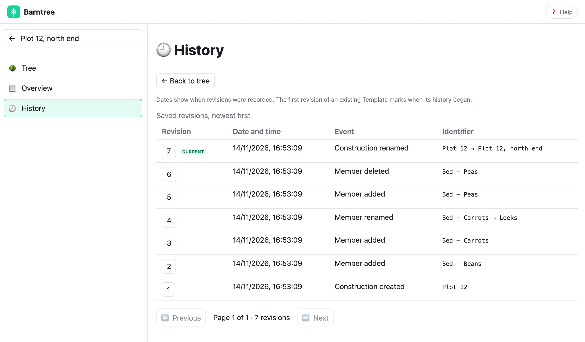

Say what goes where, and keep it valid.
Barntree keeps a tree of things that follows the kinds of thing it may hold. Write the types once, in words anyone can read, and make as many real trees from them as you need. A change that would break the rules is refused.

Types that explain themselves.
A Template names the types of thing in one subject. Each has a name and a meaning written in plain words. A type is a leaf, which holds nothing, a list of one type, or a map of several. An allotment is a map of beds, a compost heap and a shed; the beds are a list, and each bed is a leaf.
Months later, anyone can open the tree and understand not just what exists but what each thing is for.

A change that would break it is refused.
Barntree builds the tree from the types and keeps it in line with them. It is never left half-broken: a type nobody has described, a map that holds itself forever, two members of one list with the same name, or a member added where there is no list is refused, with a message that says why.
A file that was broken outside Barntree fails loudly when it is read, and says what is wrong.
$ barntree member:add … --name="Beans" List item 'dc06e11b23467d1a' has two members named 'Beans'. $ barntree member:add … --list=<Compost’s id> --name="X" The item at 'Compost' follows 'Compost', a leaf, so it can't hold members: only a list item can.
Nothing was changed by either command.
One Template. Independent Constructions.
A Construction is a named tree of real members made from a Template. Its required children are made for you and its lists start empty. Add a bed to the plot and name it.
Plot 12 can have beans and leeks while another plot has different beds. Each Construction keeps the exact Template revision it started from, so later changes to the Template leave it intact.

History belongs to each thing.
Templates and Constructions each have their own history, newest revision first. Each explicit save is one revision, and a save that changes nothing records nothing. Open a revision to read it exactly as it was.
Restoring an earlier revision is not part of this version.

One model. Any shape.
Barntree never decides what a tree becomes. Export a Template as a tree, a document, a diagram or a set of folders with a README in each. Each is one way to show it, never the Tree itself.
Allotment | +--Beds +--Compost [Watered] +--Greenhouse +--Shed
The text projection of the Allotment Template. Tags show after a name.
Three ways in.
Quick start
Install Barntree, write a Template, make a Construction and read its history.
Start herePhilosophy
Why meaning comes first, and why nothing is rewritten or repaired behind your back.
Read whyDocumentation
Trees, Templates, Constructions, the browser app, the command line and the glossary, task by task.
Browse the documentation